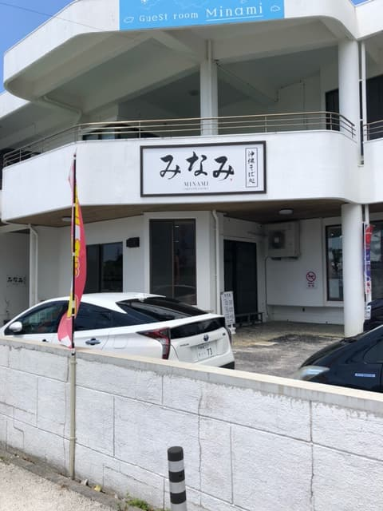
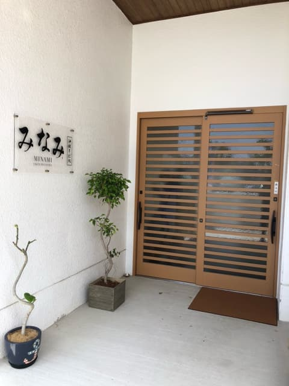
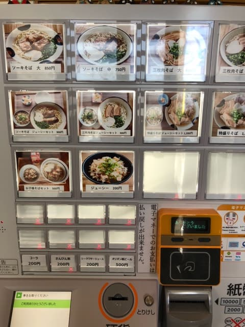
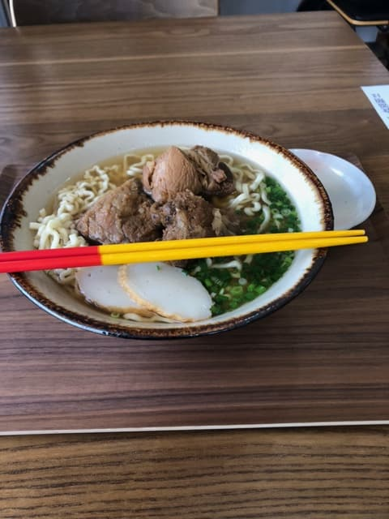

2023.8吃的😊



首先，一进店，照片中的食券机就设在正面。里面好像是新改装的，后来Google了一下，好像是2022.11才刚开幕。
食券机支援无现金支付，可以快速付款。很方便😊 支援无现金支付的冲绳面店虽然也是有，但古早的「只收现金」的店还是很多，希望能快点进步呢ｗ
这次点了位于食券机右侧上排、看起来是推荐的「排骨面（大）」。

为了品尝面的香气，先确认风味😊 从气味判断汤头「是柴鱼高汤？」，喝了一口。
结果不是柴鱼，硬要说的话稍微感觉到猪骨为底的味道。我想是猪和柴鱼的综合高汤，但感觉猪骨稍微胜出？
喝完汤之后的余韵有种酸味，虽然只有一点点，但能感受到酸酸的感觉。普通好吃，但这样的余韵是其他店没有的。
面是细的卷面类型。口感偏软呢😊
排骨也很软，普通好吃，但味道有点偏淡的感觉。肉的口感也有偏筋的地方，吃完后需要用牙签清牙缝😊
评分（9分/15分）：普通好吃，但汤头的余韵有点让人在意。感觉在地客人很多、很热闹。也支援无现金支付（这次用QUICPay付款），而且还能从冲绳面店少见的食券机拿到收据，所以我也想用另一篇文章（「【集点活动】把收据变成钱（零钱）的方法（超踏实系）」）里的方法换成钱😄 这家店离高速公路交流道、本月（2023.8）举办的篮球世界杯会场（冲绳体育馆），以及冬季职棒（广岛鲤鱼）春训用的球场（也用于高中棒球县预赛）都很近，参加运动赛事的时候，推荐顺路来一次看看😄
面：★★★☆☆（3）
汤头：★★★☆☆（3）
配料：★★★☆☆（3）